Sediment Transport Equation¶
The sediment transport module is based on the quasi-steady flow-based approach. The morphological module calculates the bed evolution based on sediment continuity equation.
Sediment motion is governed by the depth-averaged sediment concentration equation as follows,
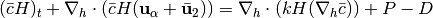
where 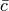 is the non-dimensional depth-averaged sediment concentration normalized by sediment density. 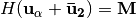 represents the flow rate per unit width defined in Shi et al. (2012), in which 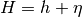 is the total water depth.  is the horizontal sediment diffusion coefficient calculated by the formula given by Elder (1959),
is the horizontal sediment diffusion coefficient calculated by the formula given by Elder (1959),
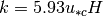
where 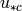 is the shear velocity and can be calculated by (van Rijn, 1984)
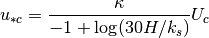
in which 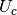 is the depth-averaged total velocity, 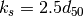 is Nikuradse roughness coefficient, and 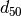 is the median grain diameter.
In the advection-diffusion equation,  and
and  represent the erosion rate and deposition rate, respectively. The erosion rate can be calculated using van Rijn’s (1984) pickup function,
represent the erosion rate and deposition rate, respectively. The erosion rate can be calculated using van Rijn’s (1984) pickup function,
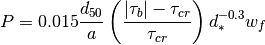
where  is a reference elevation and is a function of total depth (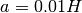), 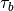 is the bed shear stress, and 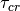 is the critical shear stress. has the dimension of velocity (m/s) considering the convection-diffusion equation for non-dimensional sediment concentration. 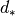 is dimensionless grain size defined as
is a reference elevation and is a function of total depth (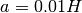), 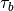 is the bed shear stress, and 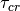 is the critical shear stress. has the dimension of velocity (m/s) considering the convection-diffusion equation for non-dimensional sediment concentration. 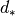 is dimensionless grain size defined as
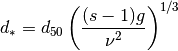
where  is the specified gravity of the sediment, and
is the specified gravity of the sediment, and  is the kinematic viscosity coefficient. The critical bed shear stress used in (ref{p}) is defined as,
is the kinematic viscosity coefficient. The critical bed shear stress used in (ref{p}) is defined as,
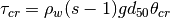
where 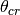 is the critical Shields parameter, approximately equal to 0.05. Based on the roughness estimate, the shear stress is expressed as
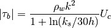
The deposition rate can be calculated using the formula of Cao (1999),
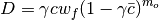
where 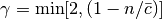,  is the sediment porosity, and 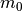 is a constant number given as 2.0.
is the sediment porosity, and 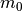 is a constant number given as 2.0.